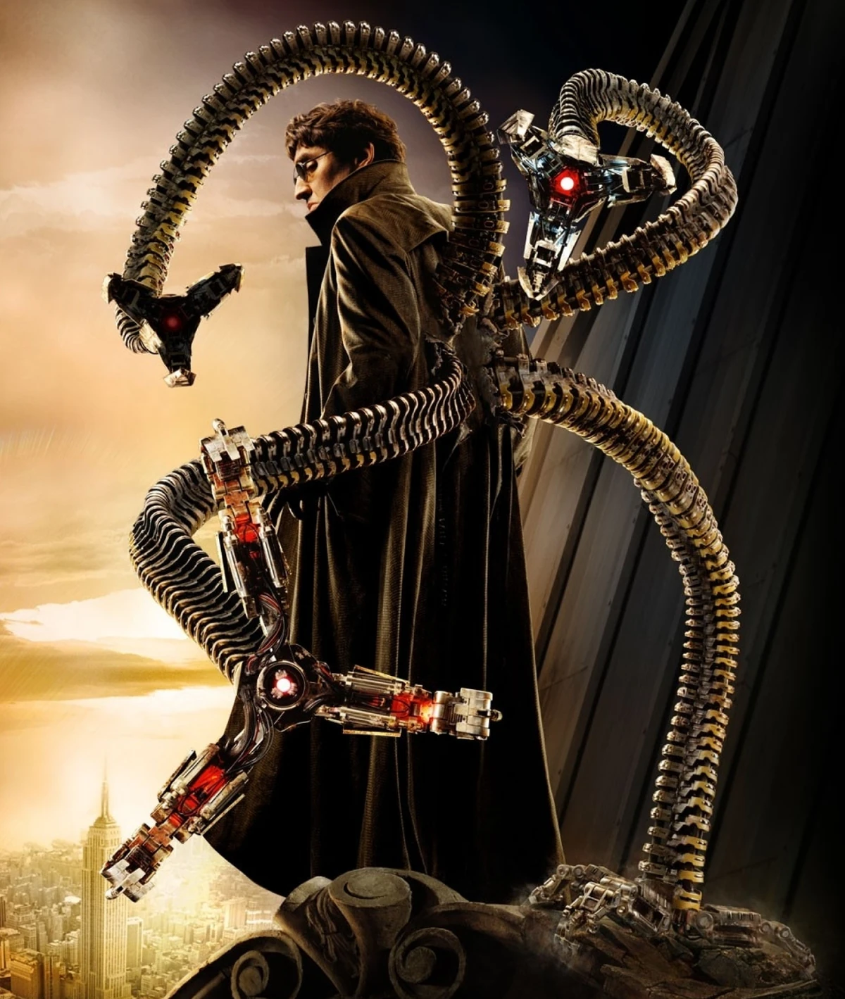
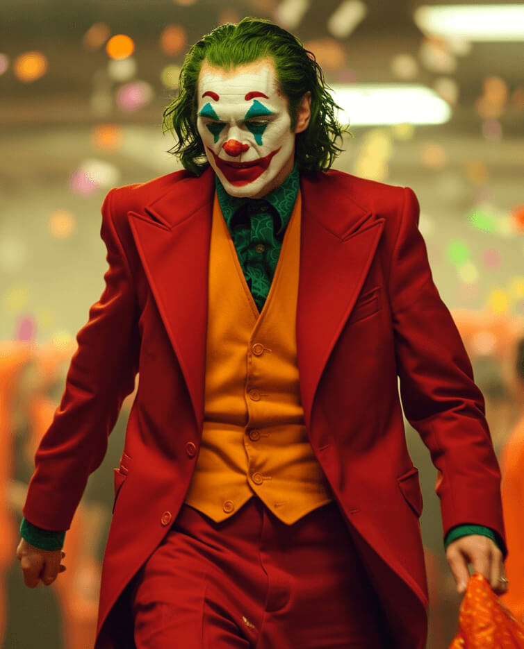

Lex Luthor es el archienemigo de Superman y uno de los villanos más icónicos del universo de DC Comics. Es un empresario multimillonario, científico brillante y filántropo en apariencia, pero en realidad, es un hombre ambicioso y despiadado. Su principal motivación es su odio y envidia hacia Superman, al que considera una amenaza para la humanidad y para su propio poder e influencia. Luthor utiliza su vasto intelecto, recursos financieros y tecnología avanzada para intentar derrotar a Superman y, a menudo, busca formas de manipular la opinión pública en su contra.

Descripcion
Doctor Octopus es uno de los enemigos más emblemáticos de Spider-Man. Es un científico brillante especializado en física nuclear, cuyo cuerpo quedó fusionado con cuatro brazos mecánicos durante un experimento fallido. Estos tentáculos metálicos, controlados mentalmente, le otorgan una fuerza y agilidad sobrehumanas. Otto Octavius es conocido por su intelecto superior, su ego desmesurado y su capacidad para elaborar planes complejos y peligrosos. A lo largo de los años, ha formado y liderado varios grupos de supervillanos, como los Seis Siniestros.

Descripcion
El Joker es el archienemigo de Batman y uno de los villanos más famosos y temidos en el universo de DC Comics. Su verdadero nombre y origen a menudo son ambiguos y varían según la interpretación, pero comúnmente se le representa como un criminal psicópata con un sentido del humor retorcido y una mente brillante para el caos y la anarquía. Caracterizado por su piel blanca, cabello verde y sonrisa roja permanente, el Joker es impredecible, sádico y disfruta sembrando el caos en Gotham City. Su relación con Batman es compleja, viéndose a sí mismo como la contraparte del Caballero Oscuro, y su motivación principal es demostrar que cualquier persona puede volverse loca con el empuje adecuado.